MAX Tageslicht
Was ist neu in Version 4.2.0?
Was ist neu in Version 4.1.2?
Was ist neu in Version 4.1.1?
Was ist neu in Version 4.1.0?
Was ist neu in Version 4.0.3?
Was ist neu in Version 4.0.1?
Was ist neu in Version 4.0.0?
Tippen Sie hier, um unsere Facebook-Benutzergruppe zu besuchen!
Was ist neu in Version 3.1.6?
Was ist neu in Version 3.1.5?
Was ist neu in Version 3.1.4?
Was ist neu in Version 3.1.3?
Was ist neu in Version 3.1.1?
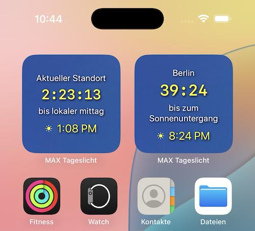
Was ist neu in Version 3.0.7?
Version 3.0 wurde erheblich verbessert und bietet die Integration von Monddaten, vierzehn neue grafische Datenfelder und über hundert Verbesserungen. Bemerkenswert ist, dass es eine dreimal höhere Energieeffizienz als frühere Versionen erreicht.
Scrollen Sie nach unten, um jedes der 14 neuen Datenfelder anzuzeigen. Wenn Sie die App verwenden, tippen Sie auf ein beliebiges Feld, um auf zusätzliche Funktionen zuzugreifen.
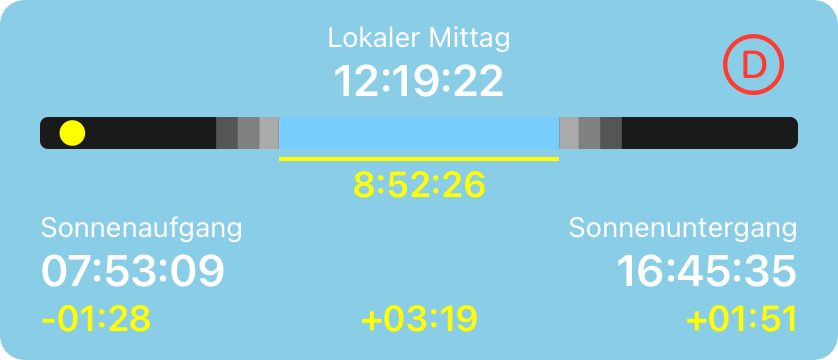
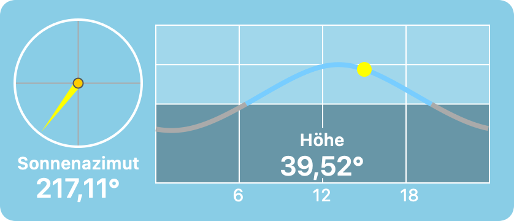
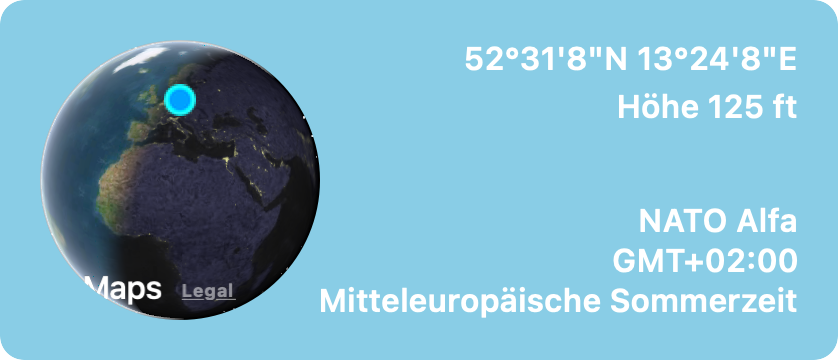
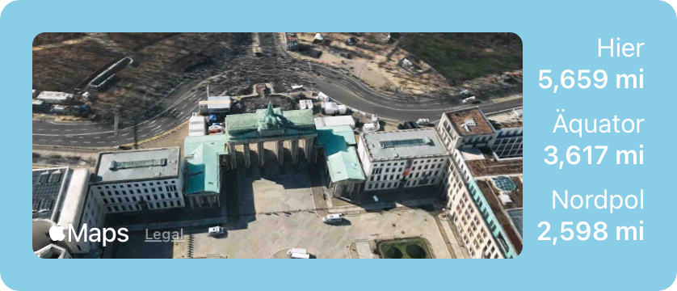
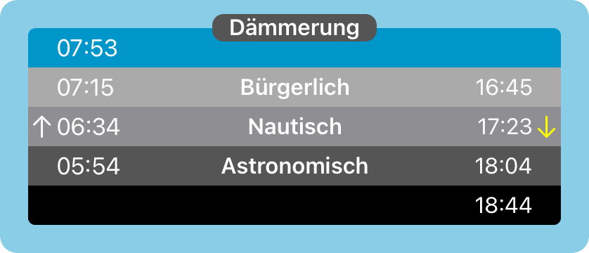
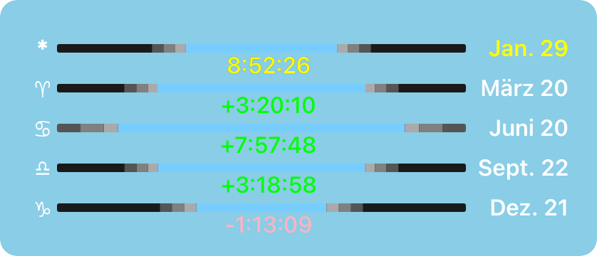
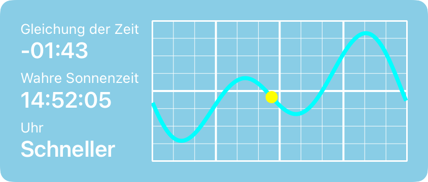
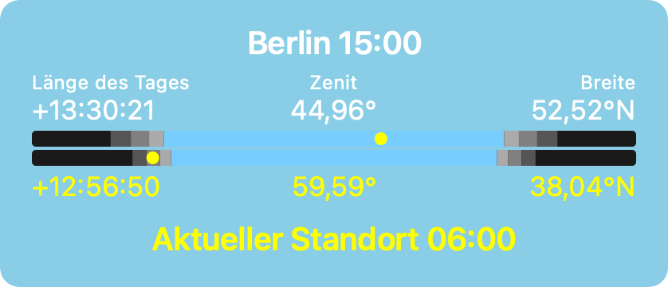
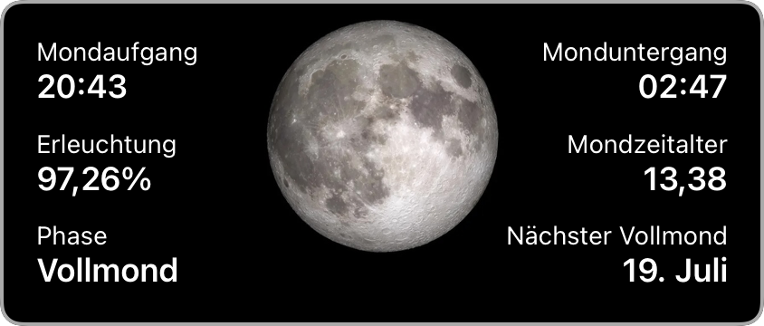
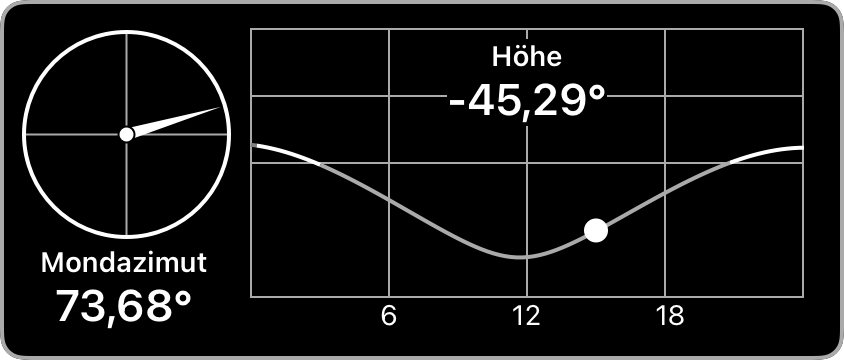
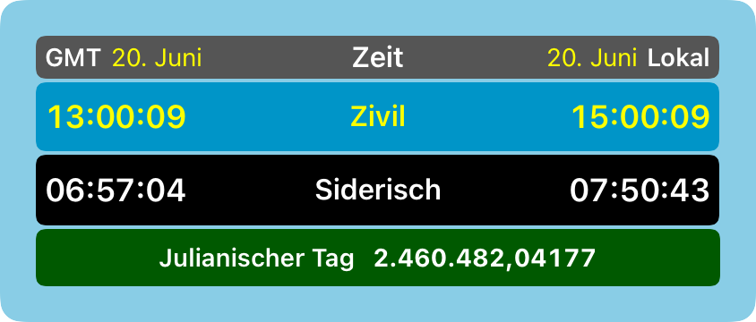
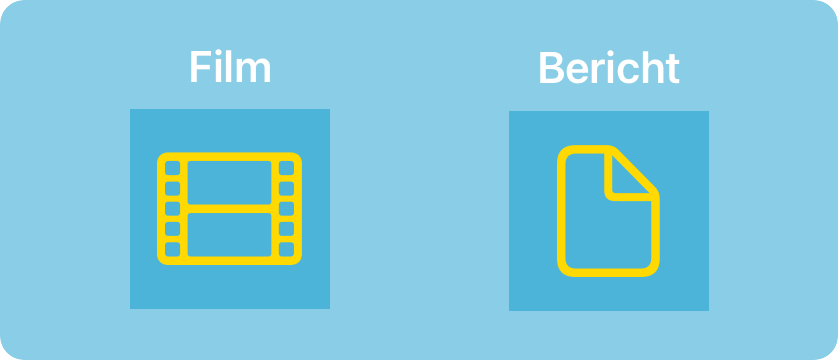
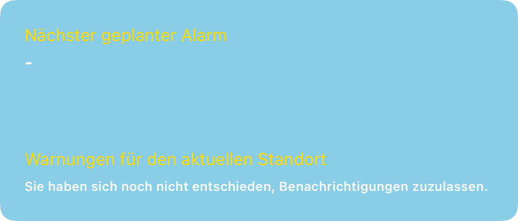
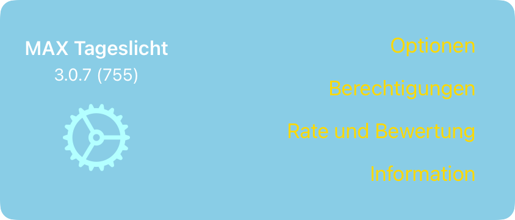
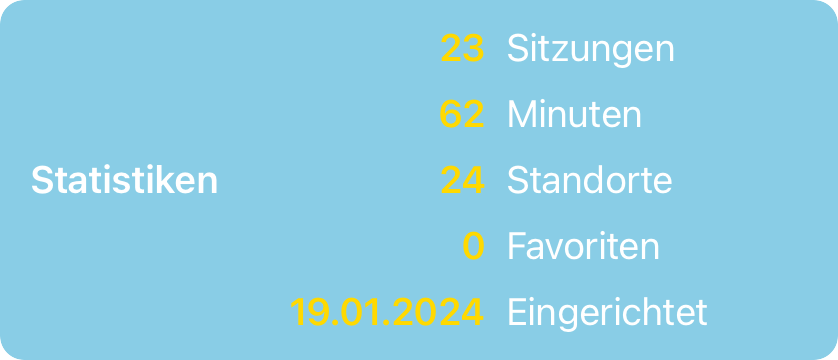
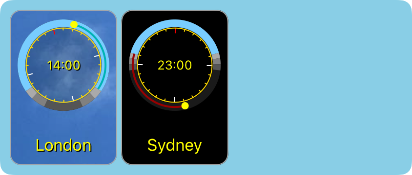
Sonnenpanel
Zeigt Sonnenaufgang, Mittag, Sonnenuntergang, Tageslänge und Änderungen gegenüber dem Vortag an. Tippen Sie hier, um zu verschiedenen Terminen und Zeiten zu erkunden.
Solar-Höhenpanel
Zeigt Sonnenhöhe und Azimut an. Tippen Sie hier, um zu verschiedenen Terminen und Zeiten zu erkunden.
Standortbereich
Zeigt Standort-, Höhen- und Zeitzoneninformationen an. Tippen Sie hier, um die Karte anzuzeigen und weitere Standorte zu speichern.
Distanzfeld
Zeigt die Entfernung zum aktuellen Standort, zum Äquator und zum nächsten Pol an. Tippen Sie hier, um die Karte anzuzeigen und weitere Standorte zu speichern.
Dämmerungspanel
Zeigt die Dämmerungszeiten an. Tippen Sie hier, um zu verschiedenen Terminen und Zeiten zu erkunden.
Tagundnachtgleiche-Panel
Zeigt Informationen zur Tageslänge für Tagundnachtgleiche und Sonnenwende sowie den aktuellen Tag an. Tippen Sie hier, um zu verschiedenen Terminen und Zeiten zu erkunden.
Panel „Zeitgleichung“
Zeigt Informationen zur Zeitgleichung für Liebhaber von Sonnenuhren an. Tippen Sie hier, um zu verschiedenen Terminen und Zeiten zu erkunden.
Vergleichspanel
Vergleicht Breitengrad, Tageslänge und Sonnenhöhe für zwei Standorte. Tippen Sie hier, um zu verschiedenen Terminen und Zeiten zu erkunden.
Mondtafel
Zeigt Mondaufgang, Monduntergang, Mondphase und Beleuchtung an. Tippen Sie hier, um zu verschiedenen Terminen und Zeiten zu erkunden.
Mondhöhentafel
Zeigt Mondhöhe und Azimut an. Tippen Sie hier, um zu verschiedenen Terminen und Zeiten zu erkunden.
Astronomiefeld
Zeigt GMT und Ortszeit, bürgerliche und siderische Zeit sowie den julianischen Tag an. Tippen Sie, um zu verschiedenen Daten und Zeiten zu erkunden.
Film- und Berichtsbereich
Zeigt Schaltflächen zum Erstellen eines Films oder zum Generieren eines Berichts an. Tippen Sie hier, um einen Film oder Bericht zu erstellen und anzusehen.
Benachrichtigungsfeld
Zeigt den Status der von Ihnen festgelegten Benachrichtigungen an. Tippen Sie hier, um Ihre Benachrichtigungen zu verwalten.
Einstellungsbereich
Zeigt Schaltflächen zum Verwalten von Einstellungen an, einschließlich Optionen, Berechtigungen, Bewerten und Überprüfen sowie App-Informationen, Datenschutz und Support. Tippen Sie hier, um Optionen auszuwählen, Berechtigungen zu überprüfen, diese App zu bewerten und zu überprüfen sowie die App-Version und andere Informationen abzurufen.
Statistikfenster
Zeigt Daten über Ihre Nutzung der App an.
Verlaufsfeld
Zeigt die Orte an, die Sie kürzlich in der App besucht haben.